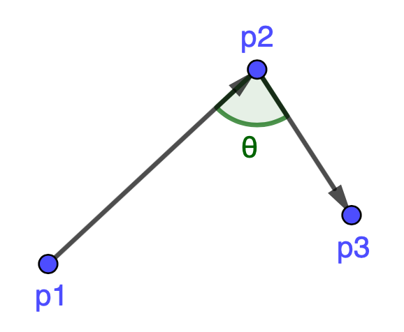

tsfuse.transformers
tsfuse.transformers.boolean
- class tsfuse.transformers.boolean.Greater(*parents, **kwargs)
Element-wise greater than comparison
- transform(x, y, **kwargs)
Compute \(x > y\)
- class tsfuse.transformers.boolean.Less(*parents, **kwargs)
Element-wise less than comparison
- transform(x, y, **kwargs)
Compute \(x < y\)
tsfuse.transformers.frequency
- class tsfuse.transformers.frequency.FFT(*parents, attr='abs', axis='time', **kwargs)
Fast Fourier transform
- Parameters
attr ({'real', 'imag', 'abs', 'angle'}, optional) – Return the real part (‘real’), imginary part (‘imag’), absolute value (‘abs’), or angle in degrees (‘angle’). Default: ‘abs’
axis ({'time', 'dims'}, optional) – Direction of time: timestamps (‘time’) or dimensions (‘dims’). Default: ‘time’
- transform(x, **kwargs)
Compute the fast Fourier transform of each time series in x
- Parameters
x (Collection) – Time series data.
- class tsfuse.transformers.frequency.CWT(*parents, wavelet='ricker', width=1, axis=None, **kwargs)
Continuous wavelet transform
- Parameters
wavelet ({'ricker'}, optional) – Wavelet type. Default: ‘ricker’
width (int, optional) – Wavelet width. Default: 1
axis ({'time', 'dims'}, optional) – Direction of time: timestamps (‘time’) or dimensions (‘dims’). Default: ‘time’
- transform(x, **kwargs)
Compute continous wavelet transform for each time series in x
- Parameters
x (Collection) – Time series data.
- class tsfuse.transformers.frequency.PowerSpectralDensity(*parents, axis=None, **kwargs)
Power spectral density
- Parameters
axis ({'time', 'dims'}, optional) – Direction of time: timestamps (‘time’) or dimensions (‘dims’). Default: ‘time’
- transform(x, **kwargs)
Compute power spectral density using Welch’s method, for each time series in x
- Parameters
x (Collection) – Time series data.
tsfuse.transformers.geometry
- class tsfuse.transformers.geometry.Norm(*parents, p=2, **kwargs)
Vector norm
- Parameters
p (int, optional) – Order of the vector norm. Default: 2
- transform(x, **kwargs)
Compute the vector norm of order \(p\) over the dimensions of x
- Parameters
x (Collection) – Multivariate time series data with least 2 dimensions.
- class tsfuse.transformers.geometry.Resultant(*parents, **kwargs)
Euclidean norm
- transform(x, **kwargs)
Compute the Euclidean norm over the dimensions of x
- Parameters
x (Collection) – Multivariate time series data with least 2 dimensions.
- class tsfuse.transformers.geometry.Angle(*parents, **kwargs)
Angle defined by three points
- transform(p1, p2, p3, **kwargs)
Compute the angle \(\mathbf{\theta}\) defined by three points p1, p2, p3 as shown in the figure below:
This function uses the following formula for computing \(\theta\):
\(\theta = \mathrm{arccos}\Bigg( \frac{\overrightarrow{p1p2}~\cdot~\overrightarrow{p2p3}}{||\overrightarrow{p1p2}||~||\overrightarrow{p2p3}||} \Bigg)\)
- Parameters
p1 (Collection) – 2D/3D coordinates of point 1.
p2 (Collection) – 2D/3D coordinates of point 2.
p3 (Collection) – 2D/3D coordinates of point 3.
{kind=link}
tsfuse.transformers.mathematics
- class tsfuse.transformers.mathematics.Add(*parents, **kwargs)
Element-wise addition
- transform(x, y, **kwargs)
Compute \(x + y\)
- class tsfuse.transformers.mathematics.Subtract(*parents, **kwargs)
Element-wise subtraction
- transform(x, y, **kwargs)
Compute \(x - y\)
- class tsfuse.transformers.mathematics.Multiply(*parents, **kwargs)
Element-wise multiplication
- transform(x, y, **kwargs)
Compute \(x \cdot y\)
- class tsfuse.transformers.mathematics.Divide(*parents, **kwargs)
Element-wise division
- transform(x, y, **kwargs)
Compute \(x / y\)
- class tsfuse.transformers.mathematics.Negative(*parents, **kwargs)
Element-wise negation
- transform(x, **kwargs)
Compute \(-x\)
- class tsfuse.transformers.mathematics.Reciprocal(*parents, **kwargs)
Element-wise multiplicative inverse
- transform(x, **kwargs)
Compute \(1/x\)
- class tsfuse.transformers.mathematics.Square(*parents, **kwargs)
Element-wise square
- transform(x, **kwargs)
Compute \(x^2\)
- class tsfuse.transformers.mathematics.Exponent(*parents, a=2, **kwargs)
Element-wise exponent.
- Parameters
a (int, optional) – Exponent. Default: 2
- transform(x, **kwargs)
Compute \(x^a\)
- class tsfuse.transformers.mathematics.Sqrt(*parents, **kwargs)
Element-wise square root
- transform(x, **kwargs)
Compute \(\sqrt{x}\)
- class tsfuse.transformers.mathematics.Abs(*parents, **kwargs)
Element-wise absolute value
- transform(x, **kwargs)
Compute \(|x|\)
- class tsfuse.transformers.mathematics.Sum(*parents, axis=None, **kwargs)
Summation
- Parameters
axis ({'time', 'dims'}, optional) – Direction of time: timestamps (‘time’) or dimensions (‘dims’). Default: first axis with more than one value.
- transform(x, **kwargs)
Compute the sum along the given axis
- class tsfuse.transformers.mathematics.CumSum(*parents, axis=None, **kwargs)
Cumulative summation
- Parameters
axis ({'time', 'dims'}, optional) – Direction of time: timestamps (‘time’) or dimensions (‘dims’). Default: first axis with more than one value.
- transform(x, **kwargs)
Compute cumulative sum along the given axis
- class tsfuse.transformers.mathematics.Diff(*parents, axis=None, **kwargs)
First-order derivative
- Parameters
axis ({'time', 'dims'}, optional) – Direction of time: timestamps (‘time’) or dimensions (‘dims’). Default: first axis with more than one value.
- transform(x, **kwargs)
Compute difference \(v_{i+1} - v_i\) for all pairs of consecutive value \(v_i\) and \(v_{i+1}\) along the given axis
- class tsfuse.transformers.mathematics.Roots(*parents, axis=None, **kwargs)
Roots of a polynomial
- Parameters
axis ({'time', 'dims'}, optional) – Direction of time: timestamps (‘time’) or dimensions (‘dims’). Default: first axis with more than one value.
- transform(x, **kwargs)
For the axis to which this transformer is applied, the values \(p_0, p_1, ..., p_n\) are interpreted as the coefficients of a polynomial of degree n:
\(p_0 \cdot x^n + p_1 \cdot x^{n-1} + ... + p_n\)
For each polynomial, this transformer computes the values where the result of the polynomial equals zero.
Notes
Only the real roots are returned (i.e., no complex roots)
- class tsfuse.transformers.mathematics.Average(*parents, **kwargs)
Element-wise average
- transform(x, y, **kwargs)
Compute \(\frac{x+y}{2}\)
tsfuse.transformers.peaks
- class tsfuse.transformers.peaks.NumberPeaks(*parents, support=1, axis=None, **kwargs)
Number of peaks
- Parameters
support (int, optional) – Minimum support of each peak. Default: 1
axis ({'time', 'dims'}, optional) – Direction of time: timestamps (‘time’) or dimensions (‘dims’). Default: first axis with more than one value.
- transform(x, **kwargs)
For each series in x, compute the number of peaks that have a support larger than the given minimum support. The support of a peak is defined as the length of the largest subsequence around the peak where the peak has the largest value.
- class tsfuse.transformers.peaks.NumberPeaksCWT(*parents, max_width=1, axis=None, **kwargs)
Number of peaks estimated using a continous wavelet transform
- Parameters
max_width (int, optional) – Maximum width of the wavelet. Default: 1
axis ({'time', 'dims'}, optional) – Direction of time: timestamps (‘time’) or dimensions (‘dims’). Default: first axis with more than one value.
- transform(x, **kwargs)
For each series in x, estimate the number of peaks using
scipy.signal.find_peaks_cwtwherewidths = [1, ..., max_width]
tsfuse.transformers.sampling
- class tsfuse.transformers.sampling.Resample(*parents, num=None, axis=None, **kwargs)
- Parameters
num (int) – New number of samples.
axis ({'time', 'dims'}, optional) – Time direction: timestamps (‘time’) or dimensions (‘dims’). Default: first axis with more than one value.
- transform(x, **kwargs)
Resample x in the time direction to num samples using
scipy.signal.resample
tsfuse.transformers.statistics
- class tsfuse.transformers.statistics.Length(*parents, axis=None, **kwargs)
- class tsfuse.transformers.statistics.Sum(*parents, axis=None, **kwargs)
Summation
- Parameters
axis ({'time', 'dims'}, optional) – Direction of time: timestamps (‘time’) or dimensions (‘dims’). Default: first axis with more than one value.
- transform(x, **kwargs)
Compute the sum along the given axis
- class tsfuse.transformers.statistics.Mean(*parents, axis=None, **kwargs)
- class tsfuse.transformers.statistics.Median(*parents, axis=None, **kwargs)
- class tsfuse.transformers.statistics.Min(*parents, axis=None, **kwargs)
- class tsfuse.transformers.statistics.ArgMin(*parents, first=True, rel=False, axis=None, **kwargs)
- class tsfuse.transformers.statistics.Max(*parents, axis=None, **kwargs)
- class tsfuse.transformers.statistics.ArgMax(*parents, first=True, rel=False, axis=None, **kwargs)
- class tsfuse.transformers.statistics.Variance(*parents, axis=None, **kwargs)
- class tsfuse.transformers.statistics.StandardDeviation(*parents, axis=None, **kwargs)
- class tsfuse.transformers.statistics.Skewness(*parents, axis=None, **kwargs)
- class tsfuse.transformers.statistics.Kurtosis(*parents, axis=None, **kwargs)
- class tsfuse.transformers.statistics.SpectralMoment(*parents, r=1, origin=False, axis=None, **kwargs)
- class tsfuse.transformers.statistics.SpectralMean(*parents, origin=False, axis=None, **kwargs)
- class tsfuse.transformers.statistics.SpectralVariance(*parents, origin=False, axis=None, **kwargs)
- class tsfuse.transformers.statistics.SpectralSkewness(*parents, origin=False, axis=None, **kwargs)
- class tsfuse.transformers.statistics.SpectralKurtosis(*parents, origin=False, axis=None, **kwargs)
- class tsfuse.transformers.statistics.Quantile(*parents, q=0.5, axis=None, **kwargs)
- class tsfuse.transformers.statistics.IndexMassQuantile(*parents, q=0.5, rel=False, axis=None, **kwargs)
- class tsfuse.transformers.statistics.Energy(*parents, axis=None, **kwargs)
- class tsfuse.transformers.statistics.EnergyRatio(*parents, chunks=10, axis=None, **kwargs)
- class tsfuse.transformers.statistics.Entropy(*parents, axis=None, **kwargs)
- class tsfuse.transformers.statistics.SampleEntropy(*parents, axis=None, **kwargs)
- class tsfuse.transformers.statistics.BinnedDistribution(*parents, bins=10, axis=None, **kwargs)
- class tsfuse.transformers.statistics.BinnedEntropy(*parents, bins=10, axis=None, **kwargs)
- class tsfuse.transformers.statistics.C3(*parents, lag=1, axis=None, **kwargs)
- class tsfuse.transformers.statistics.CID(*parents, axis=None, **kwargs)
- class tsfuse.transformers.statistics.CountAboveMean(*parents, axis=None, **kwargs)
- class tsfuse.transformers.statistics.CountBelowMean(*parents, axis=None, **kwargs)
- class tsfuse.transformers.statistics.RangeCount(*parents, min=- 1, max=1, axis=None, **kwargs)
- class tsfuse.transformers.statistics.ValueCount(*parents, value=0, axis=None, **kwargs)
- class tsfuse.transformers.statistics.Outliers(*parents, r=3, rel=False, axis=None, **kwargs)
- class tsfuse.transformers.statistics.AutoCorrelation(*parents, axis=None, **kwargs)
- class tsfuse.transformers.statistics.CrossCorrelation(*parents, axis=None, **kwargs)
- class tsfuse.transformers.statistics.AutoRegressiveCoefficients(*parents, axis=None, **kwargs)
- class tsfuse.transformers.statistics.HighVariance(*parents, threshold=1, axis=None, **kwargs)
- class tsfuse.transformers.statistics.HighStandardDeviation(*parents, r=1, axis=None, **kwargs)
- class tsfuse.transformers.statistics.SymmetryLooking(*parents, r=1, axis=None, **kwargs)
- class tsfuse.transformers.statistics.NumberCrossings(*parents, threshold=0, axis=None, **kwargs)
- class tsfuse.transformers.statistics.LinearTrend(*parents, axis=None, **kwargs)
- class tsfuse.transformers.statistics.LongestStrikeAboveMean(*parents, axis=None, **kwargs)
- class tsfuse.transformers.statistics.LongestStrikeBelowMean(*parents, axis=None, **kwargs)
- class tsfuse.transformers.statistics.SumChange(*parents, abs=False, axis=None, **kwargs)
- class tsfuse.transformers.statistics.MeanChange(*parents, abs=False, axis=None, **kwargs)
- class tsfuse.transformers.statistics.MeanSecondDerivativeCentral(*parents, axis=None, **kwargs)
- class tsfuse.transformers.statistics.TimeReversalAsymmetryStatistic(*parents, lag=1, axis=None, **kwargs)
- class tsfuse.transformers.statistics.FriedrichCoefficients(*parents, m=1, r=10, axis=None, **kwargs)
- class tsfuse.transformers.statistics.MaxLangevinFixedPoint(*parents, m=1, r=10, axis=None, **kwargs)
tsfuse.transformers.uniqueness
- class tsfuse.transformers.uniqueness.HasDuplicate(*parents, axis=None, **kwargs)
- class tsfuse.transformers.uniqueness.HasDuplicateMin(*parents, axis=None, **kwargs)
- class tsfuse.transformers.uniqueness.HasDuplicateMax(*parents, axis=None, **kwargs)
- class tsfuse.transformers.uniqueness.NumberUniqueValues(*parents, rel=True, axis=None, **kwargs)
- class tsfuse.transformers.uniqueness.SumReoccurringDataPoints(*parents, axis=None, **kwargs)
- class tsfuse.transformers.uniqueness.SumReoccurringValues(*parents, axis=None, **kwargs)